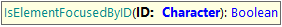
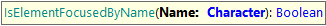
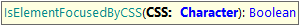
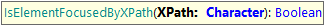
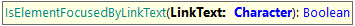

This command is useful to check if an element is focused in the page. This command returns true if element has the focus and false if not. Can be executed using different locators (id, name, CSS, XPath or LinkText) as follows: IsElementFocusedByID Goal: To check if an element it’s focused using its ID. Parameters: ID: the HTML element ID . Example of use:
&driver.IsElementFocusedByID("InvoiceTotal")
IsElementFocusedByName Goal: To check if an element it’s focused using its 'name' attribute. Parameters: Name: the value of the NAME attribute of the element. Example of use:
&driver.IsElementFocusedByName("total")
IsElementFocusedByCSS Goal: To check if an element it’s focused using its CSS selector. Parameters: CSS: the CSS selector to the element. Example of use:
&driver.IsElementFocusedByCSS("#vVAR1")
IsElementFocusedByXPath Goal: To check if an element it’s focused using an XPath selector. Parameters: XPath: the XPath selector to the element. Example of use:
&driver.IsElementFocusedByXPath("//textarea[@id='vVAR1']")
IsElementFocusedByLinkText Goal: To check if an element it’s focused using a LinkText selector. Parameters: LinkText: the link’s text of the element. Example of use:
&driver.IsElementFocusedByLinkText("Edit")
AvailabilityThis set of commands is available since GeneXus 16 upgrade 10. |